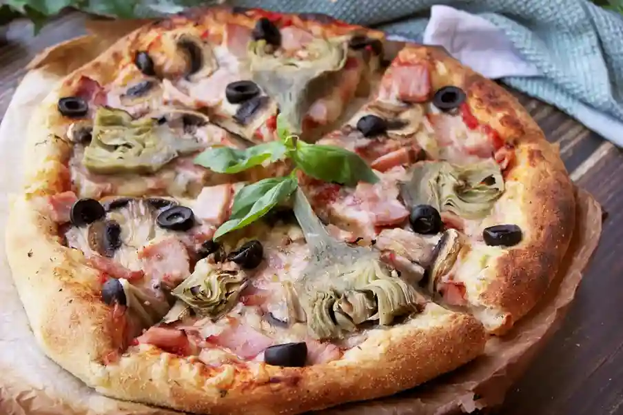
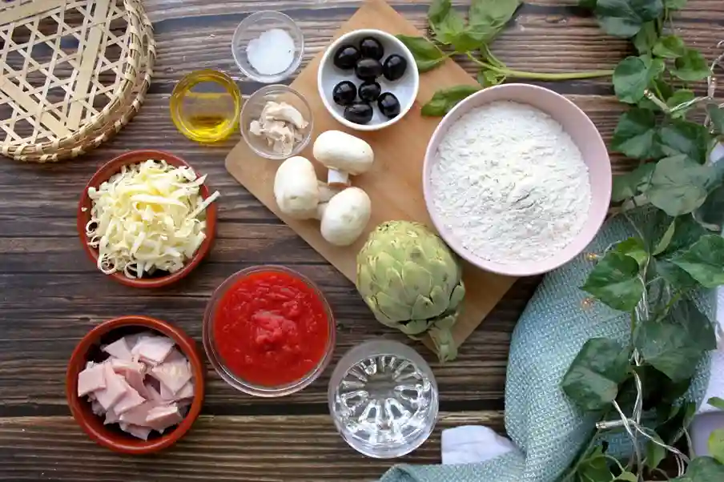
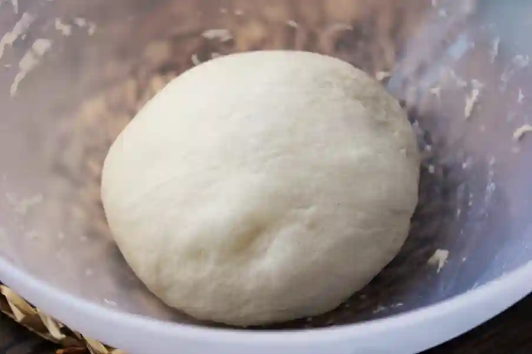
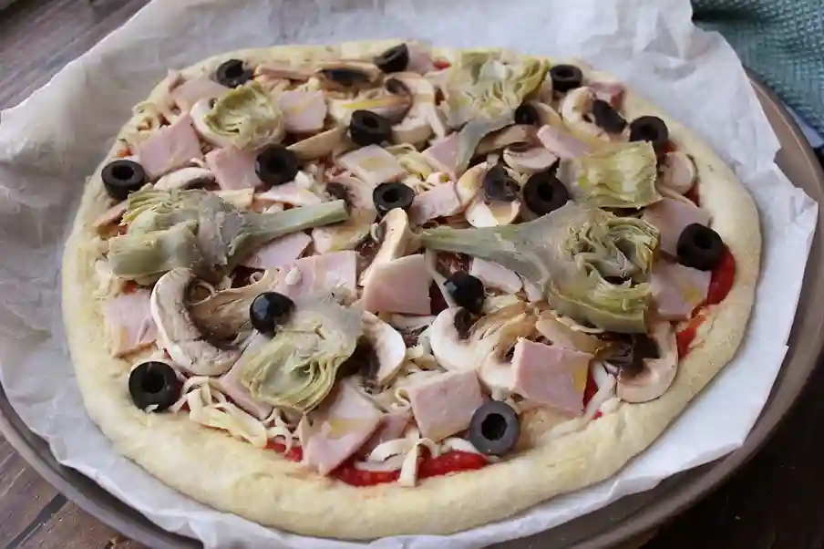

A continuación, un audio de bella ciao!!
Sentite un poquito más cerca de tu querida Italia, a continuación la preparación..
Ingredientes para la masa:
- 680 g harina
- 485 g agua
- 9 g levadura fresca
- 15 g sal
- 30 g azúcar
- 25 g aceite de oliva extra virgen
Harina para espolvorear la mesa y aceite para untar las placas
Elaboración paso a paso
- En un recipiente grande pon la levadura desmenuzada.
- Añade el agua de unos 25°C.
- Añade el azúcar. Remueve hasta que se diluya el azúcar y la levadura.
- Añade el aceite y remueve.
- Tamiza la harina.
- Añade la sal. Remueve hasta que dejas de ver partículas de harina.
- Cierra el recipiente y deja la masa en reposo durante 20 minutos. 
-
Pasado el tiempo moja las manos en agua y dobla la masa en forma de
sobre. Las manos se mojan para que no se pegue la masa al manipularla - Cierra el recipiente y deja la masa en reposo durante 20 minutos.
-
Pasado el tiempo, vuelve a doblar la masa en forma de sobre.
Doblamos
la masa en forma de sobre para desarrollar el gluten. - Vuelve a dejar la masa en reposo otros 20 minutos.
- Dobla la masa en forma de sobre otra vez.
-
Toma 3 o 4 bolsitas de plastico y úntalas por dentro con un chorrito
de aceite de oliva extra virgen. - Pesa la masa y divídela en 3 o 4 trozos, para hacer 3 pizzas grandes o 4 medianas.
-
Reparte los trozos de masa en las bolsas, cierra y guardalas en la
heladera mínimo 24 horas, máximo 96 horas, de 1 a 4 días. - Al día siguiente, saca las bolsitas con la masa de la heladera.
- Aparta una para hacer la pizza y los otros trozos de masa deshínchalas.
-
La masa que no vas a usar es necesario que la deshinches,
para que destruya el glúten. El día que la vas a usar no hay que deshincharla - La masa para pizza está lista para ser usada.
-
Ahora te invito a ver cómo yo hago la pizza desde el principio
(recuerda que puedes ver el video del paso a paso) - Para empezar espolvoreo la mesa con harina.
-
Abro la bolsa y vuelco la masa sobre la mesa espolvoreada. Le doy
a la masa forma de una bola y la dejo en reposo. -
A continuación pongo a calentar el horno. Para sacarle al horno
el máximo calor, lo pongo al máximo: -
En el fondo del horno pongo la piedra para hornear panes y pizzas,
para que vaya acumulando calor en su interior y luego se trasmita a la pizza. -
Si no tienes piegra, te recomiendo que la compres, sobre todo si
tene gusta
comer buenas pizzas y panes caseros. - Caliento la piedra de 50 minutos a 1 hora.
- Ahora me pongo la salsa.
- Tomo una caja de tomate triturado.
-
Lo abro y lo pongo en un colador, para que suelte el agua de tomate.
Y
la dejo así durante 15 minutos. - La salsa para pizza tiene que estar espesita, para que no se moje la masa.
-
La pongo en un plato y la aderezo con sal, azúcar y aceite de oliva
extra virgen. Al gusto. -
Asi es, no la cuezo. Y creeme, está riquísima y es ideal PARA LA
PIZZA
FÄCIL, rápido y tremendamente rica. -
Voy a hacer la famosa PIZZA CAPRICHOSA. Esta pizza lleva salsa de
tomate,
jamon cocido, aceitunas, alcachofas, champiñones y queso mozzarella. -
Cuando falten 10 minutos para que termine de calentar el horno,
estiro la masa
en un círculo de 32 - 34 centímetros. Lo hago con tranquilidad y cariño. Se
puede estirar la masa con ayuda de un rodillo pero me gusta estirarla con la mano. - Pongo la masa sobre el papel para hornear.
- La unto con salsa de tomate.
- Pongo encima jamón, champiñones, aceitunas y finalmente el queso.
- Espolvoreo con una pizca de albahaca, de orégano y de sal. 
- Meto la pizza en el horno.
- Horneo la pizza hasta que sus bordes esten tostados.
- Listo, hora de disfrutarla...